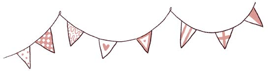
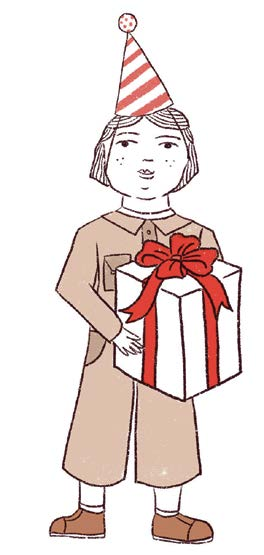
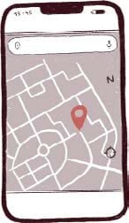
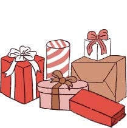
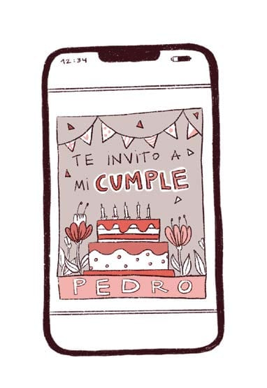

EL ENTORNO FÍSICO Y EL ENTORNO DIGITAL SE COMUNICAN:
SOMOS LA MISMA PERSONA EN LOS DOS
Cuac cuac, sonó el CELULAR de mamá. El de papá ladra, mis padres a veces son raros. Cuando tenga celular voy a ser más original que ellos y poner un ringtone de truenos. Pero como todavía no tengo, ese sonido de cuac cuac, era para mí: Pedro me invitaba a su cumple. La tarjeta la envió su mamá, obvio.
Al otro día en la ESCUELA conversamos sobre la fiesta. Pedro nos contó que la torta iba a ser de gatos, a él le encantan los gatos y tiene una gata. Por eso decidí regalarle cascabeles.
El día del cumple mi mamá se perdió y tuvo que poner el GPS para llegar.
A veces, me pregunto: «¿qué haría mi mamá si no tuviera GPS?» Si un día inventan un aparato que encuentre llaves, celulares, lentes y paraguas, mi mamá lo va a necesitar. Lo importante es que no llegué tarde al CUMPLE.